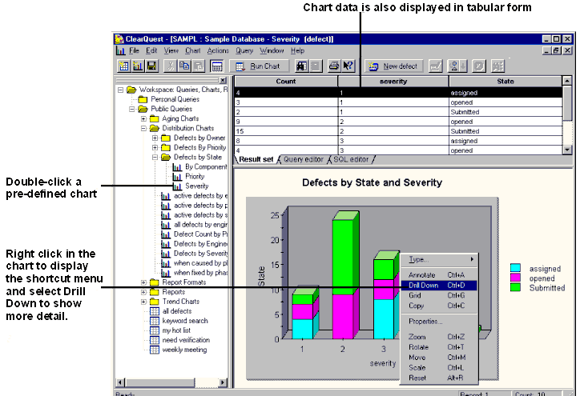

Tool Mentor:
Reporting Defect Trends and Status Using Rational ClearQuest
Purpose
This tool mentor describes how to create a Rational ClearQuest® chart to
view defect trends and to generate a defect status report.
This tool mentor relates to the Rational Unified Process information:
Overview
ClearQuest provides predefined charts and reports that allow roles, such
as managers, to see the status of a project at a glance. It is also easy to
modify charts and reports, and to create new ones.
Charts
Rational ClearQuest charts provide a graphical display of change request data.
ClearQuest supports three kinds of charts: distribution charts, trend charts,
and aging charts.
Distribution charts show how many records fit the categories
or criteria of a query. For example, a project manager might generate charts
showing:
- the current status of a group of records
- who has been assigned the most/least change requests
- which records have the highest priority

Trend charts show
- how many records were transitioned into the selected states by day, week,
or month
- the rate at which new records are submitted, resolved, or moved into other
states
Aging charts show how many records have been in the selected
states for how long. Aging charts answers questions such as:
- How many defects have been open for less than one week?
- How many defects have been open for more than three weeks?
- How many defects have been postponed for more than two months?
The aging and trends of any state-based records (defects,
enhancement requests, documentation requests, and more) can be charted.
Reports
ClearQuest also allows you to generate reports using existing queries. A
ClearQuest report consists of a query inserted into a report format created by a
third-party tool. A role, such as a manager, creates a report format, then
saves the report format in the ClearQuest Workspace. To generate a report,
choose a report format, then specify which query will have its results
inserted into the report format. Reports are stored in the Workspace, and can be
run at any time.
Tool Steps
1. Create a Chart 
 See ClearQuest
online Help > Working with charts > Using charts. See ClearQuest
online Help > Working with charts > Using charts.
2. Create a Report
See ClearQuest
online Help > Working with reports > Creating report formats.
You can also create a report from the currently active query.
See ClearQuest
online Help > Working with reports > Generating query reports for
instructions.
Copyright
© 1987 - 2001 Rational Software Corporation
|  Tool Mentors >
Tool Mentors >
 Rational ClearQuest Tool Mentors >
Rational ClearQuest Tool Mentors >
 Reporting Defect Trends and Status Using Rational ClearQuest
Reporting Defect Trends and Status Using Rational ClearQuest